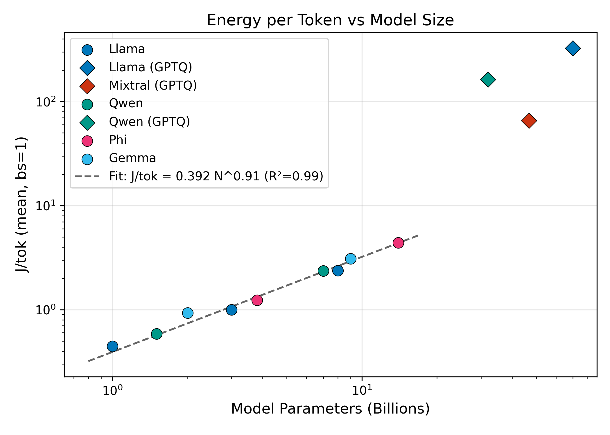
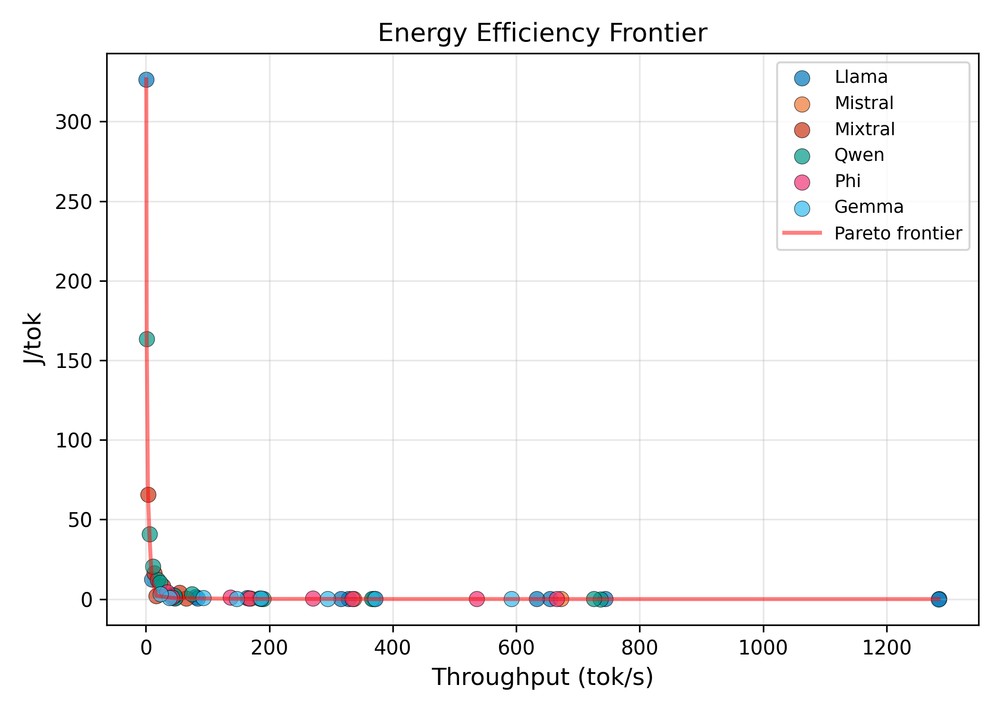
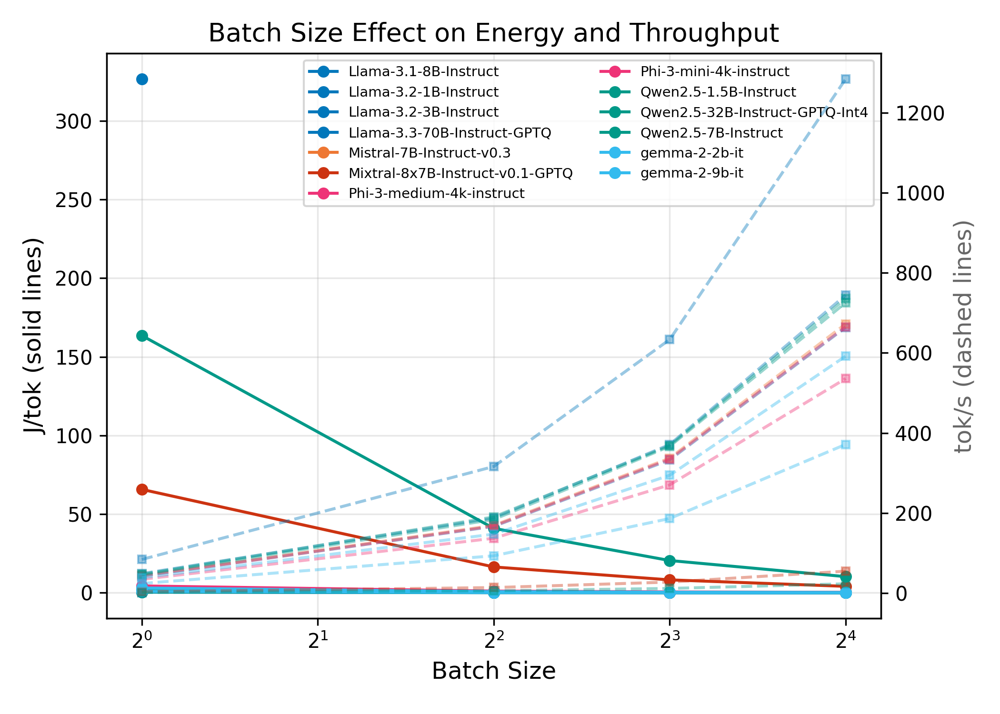
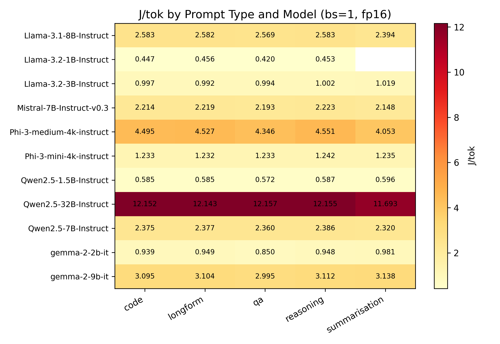
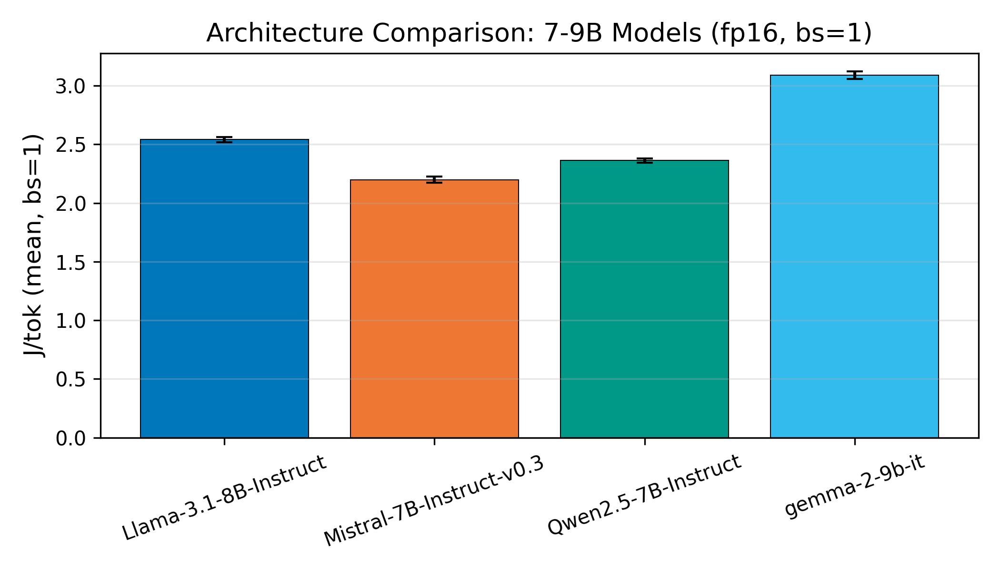
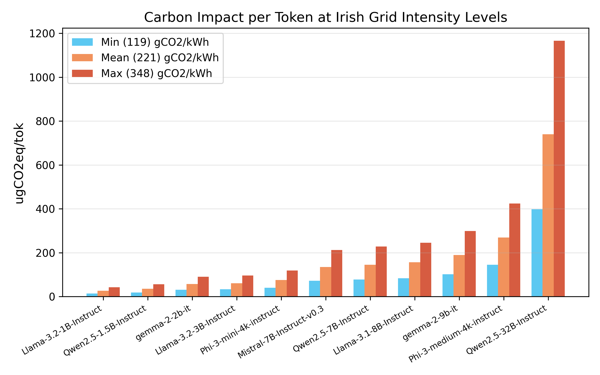
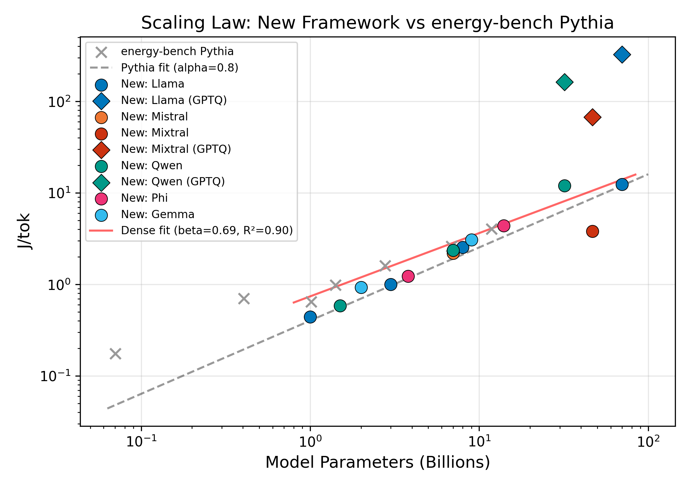
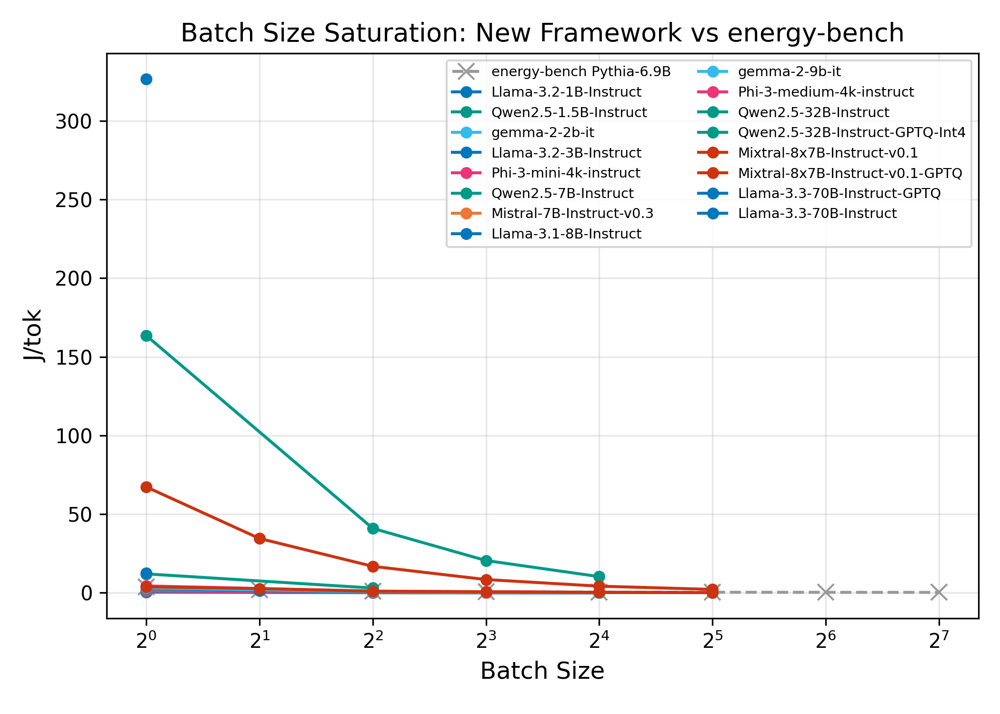

A Multi-Architecture Benchmarking Study on GPU Hardware
We present a rigorous framework for measuring LLM inference energy using direct NVML-based power sampling on an NVIDIA A100 80GB GPU. We benchmark 14 open-weight models (1B–32B parameters) across five architectural families—Llama, Mistral, Qwen, Phi, and Gemma—all in FP16 precision under uniform conditions. Our results reveal a near-linear scaling law (E ∝ N0.96, R²=0.99) relating energy to model size across architectures, find that batching reduces per-token energy by 9–15×, and demonstrate 2.9× variation in per-token carbon emissions depending on Irish grid conditions. All code, data, and reproducibility artifacts are publicly available.
Energy scales as E ∝ N0.96 (R²=0.99) across five architectural families—near-linear with model size, and higher than the 0.80 exponent found in prior single-family Pythia studies, reflecting cross-architecture diversity.
Increasing batch size from 1 to 16 reduces J/tok by 9–15×, with larger models benefiting more from amortised weight-loading and kernel-launch overhead.
At similar parameter counts (7–9B), architectural choice accounts for up to 35% difference in per-token energy. Mistral-7B and Qwen-7B are the most efficient; Gemma-9B uses the most energy despite similar size.
Using real Irish grid data (119–348 gCO2/kWh), per-token carbon emissions vary by 2.9× depending on time of day—exceeding the difference between some model choices.
NVML-based power sampling at 10 Hz in a daemon thread, with SLURM GPU index resolution and trapezoidal energy integration. 30-second idle baseline subtraction for net inference energy.
Standardised model loading in FP16 precision
with torch.cuda.synchronize() for precise timing and greedy decoding.
Computes J/tok, tok/s, mean/peak watts, and gCO2eq/tok from energy and inference measurements. 95% confidence intervals over 10 measured runs.
Benchmark protocol: 3 warmup + 10 measured runs per configuration with 5 diverse prompts (summarisation, QA, code, long-form, reasoning). Structured JSON output.








Click any column header to sort. All models in FP16 precision on a single A100 80GB GPU. Best J/tok at optimal batch size.
| Model | Params (B) | Precision | Best J/tok | Best tok/s | Best Batch | Mean Watts |
|---|---|---|---|---|---|---|
| Llama-3.2-1B | 1.0 | fp16 | 0.0312 | 1284.2 | 16 | 100.7 |
| Qwen2.5-1.5B | 1.5 | fp16 | 0.0403 | 736.3 | 16 | 93.7 |
| Gemma-2-2B | 2.0 | fp16 | 0.0656 | 591.9 | 16 | 98.6 |
| Llama-3.2-3B | 3.0 | fp16 | 0.0825 | 744.4 | 16 | 120.9 |
| Phi-3-mini (3.8B) | 3.8 | fp16 | 0.1347 | 665.1 | 16 | 155.3 |
| Mistral-7B | 7.0 | fp16 | 0.1655 | 672.4 | 16 | 170.3 |
| Qwen2.5-7B | 7.0 | fp16 | 0.1647 | 725.5 | 16 | 179.4 |
| Llama-3.1-8B | 8.0 | fp16 | 0.1137 | 1284.7 | 32 | 208.0 |
| Gemma-2-9B | 9.0 | fp16 | 0.2275 | 371.4 | 16 | 144.3 |
| Phi-3-medium (14B) | 14.0 | fp16 | 0.3335 | 535.8 | 16 | 240.4 |
| Qwen2.5-14B | 14.0 | fp16 | 0.3708 | 434.1 | 16 | 222.7 |
| Mistral-Small (22B) | 22.0 | fp16 | 0.5895 | 360.2 | 16 | 274.8 |
| Gemma-2-27B | 27.0 | fp16 | 0.7651 | 244.7 | 16 | 249.6 |
| Qwen2.5-32B | 32.0 | fp16 | 3.0507 | 74.9 | 4 | 291.4 |
Comparison with the energy-bench framework (808 measurements on the same A100 hardware).
| Metric | energy-bench | New Framework |
|---|---|---|
| Scaling exponent (β) | 0.80 (Pythia, R²=0.99) | 0.96 (multi-arch, R²=0.99) |
| J/tok ~7B model (bs=1) | 4.461 (Pythia-6.9B) | 2.37 (avg: Qwen-7B, Llama-8B, Mistral-7B) |